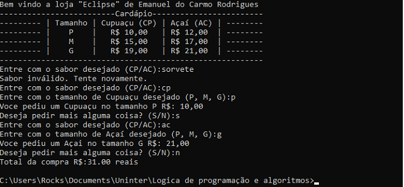
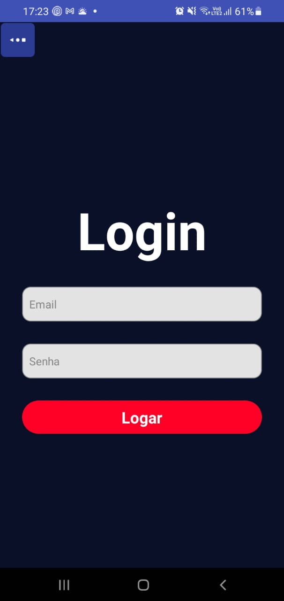
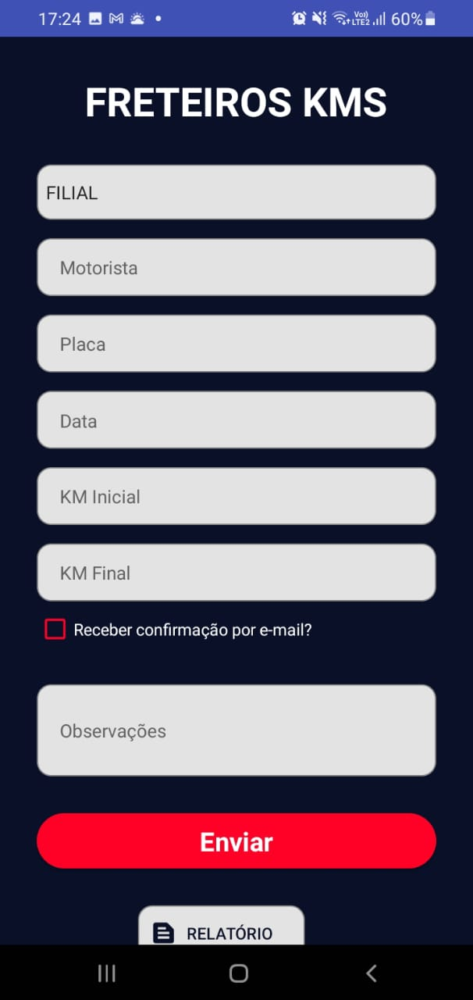

Sobre Mim:
Olá! Sou o Emanuel, um entusiasta da tecnologia e apaixonado por jogos. Com 21 anos de idade e cursando Análise e Desenvolvimento de Sistemas, estou sempre buscando desafios que me permitam expandir meu conhecimento e habilidades.
Desde jovem, os jogos têm sido uma parte fundamental da minha vida. De aventuras épicas a estratégias complexas, cada jogo me inspira de maneiras únicas.
Um dos meus favoritos é o lendário World of Warcraft que inclusive é da onde saiu o background, jogo esse onde mergulho em um mundo fantásticos de histórias envolventes.
Além de minha paixão por jogos, sou fascinado pelo mundo da programação. Explorar novas linguagens e resolver problemas desafiadores são atividades que me motivam diariamente. Acredito que a tecnologia tem o poder de transformar o mundo e estou empenhado em fazer a minha parte nesse processo.
Este portfólio reflete minha jornada até agora - uma combinação de projetos acadêmicos, experiências práticas e um toque pessoal. Aqui, você encontrará um vislumbre do meu trabalho, desde pequenos aplicativos até projetos mais complexos.
Estou sempre aberto a novas oportunidades de aprendizado e colaboração.
Se você compartilha minha paixão por tecnologia e jogos, ou se está interessado em explorar novas ideias, não hesite em entrar em contato. Estou ansioso para conectar e compartilhar experiências com pessoas que compartilham interesses similares.
Formação
Como citado anteriormente, estou cursando Análise e Desenvolvimento de Sistemas na Universidade UNINTER. Esta jornada acadêmica tem sido uma experiência incrível, proporcionando-me uma base sólida em conceitos fundamentais de programação, análise de sistemas e desenvolvimento de software.
Além disso, busco constantemente complementar minha formação através de cursos e certificações. Recentemente, completei o curso intermediário do Pacote Office 365, aprimorando minhas habilidades em ferramentas essenciais de produtividade, como Word, Excel e PowerPoint, também de forma autônoma aprendi sobre algumas linguagens de progamação entre ela a Java.
Diante disso, tive a oportunidade de aplicar meus conhecimentos em um contexto profissional. Desenvolvi um simples, mas eficiente, aplicativo estilo formulário usando a linguagem Java, para uso interno na empresa onde trabalho. Esta experiência prática me permitiu entender melhor as necessidades do ambiente de trabalho e aplicar meus conhecimentos em situações do mundo real.
Aqui você encontrará alguns de meus projetos.
Protótipo interativo de uma loja virtual.
Desenvolvido para simular as funçoes de um aplicativo. Clique na imagem para acessar o design
Simulação de sistemas feito em Python.
 
Aplicativo desenvolvido para funcionar como um formulario.
 
Preencha o formulario para entrar em contato.